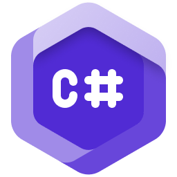

התחברו, התקינו את Minecraft ו-Fabric, נהלו מודים והפעילו את המשחק ממקום אחד. Orvex תוכנן להשתמש במשאבים מעטים כדי להשאיר יותר מהמחשב שלכם למשחק.
ללא פרסומות או טלמטריה. קובצי המשחק נשמרים בנפרד מתיקיית .minecraft הרגילה.
כל מה שצריך כדי להיכנס ל-Minecraft, ללא עומס רקע מיותר.
התחברות מאובטחת לחשבון Microsoft. Orvex לעולם אינו מטפל בסיסמה שלך.
Minecraft, Fabric, נכסים ו-Java מותקנים בתיקייה נפרדת של Orvex, בלי לשנות את ההתקנה הקיימת שלך.
צריכת משאבים נמוכה בזמן חוסר פעילות משאירה יותר משאבים זמינים ל-Minecraft.
אפשר לתקן קובצי מפעיל חסרים או פגומים בלחיצה אחת, ללא ניקוי ידני.
צריכת המפעילים נמדדה באותה מערכת. Orvex נמדד כשהוא ממוזער וללא פעילות.
| מדד | Dawn Client | Norisk Client | Orvex Client |
|---|---|---|---|
| CPU | 0.1% | 5% | 0%* |
| GPU | 0.1% | 6% | 0%* |
| RAM | 200 MB | 450 MB | 100 MB* |
| חלקות המפעיל | איטי ומקרטע | חלק | חלק מאוד |
מערכת הבדיקה: Windows 10, זיכרון RAM בנפח 16 GB, Intel Core i7 דור 11 במהירות 2.80 GHz, גרפיקה משולבת Intel Iris Xe.
* Orvex נמדד כשהוא ממוזער וללא פעילות. המדידות עשויות להשתנות לפי המערכת והשימוש. צריכת משאבים נמוכה של המפעיל משאירה יותר משאבים למשחק, אך אינה מבטיחה FPS או תוצאה מסוימת במשחק.
צוות קטן שמתמקד בדרך פשוטה להפעיל את Minecraft.



הצטרפו לשרת Discord של Orvex לקבלת עזרה בהגדרה, עדכונים ושיחה עם הקהילה.
Orvex Client פועל לחלוטין כבר היום — אפשר להתחבר, להתקין את Minecraft ו-Fabric באופן אוטומטי, ולהפעיל את המשחק עם המודים שלך.
תמיכה ב-macOS נמצאת בפיתוח.
מפעיל קל משקל להתחברות, התקנת Minecraft ו-Fabric, הגדרת Java וניהול מודים.
Windows 10 / 11 · 64-bit
התחבר פעם אחת והמפעיל מטפל בהכל. Minecraft, Fabric ו-Java מורדים באופן אוטומטי בפעם הראשונה שלוחצים על שחק.
הכל נמצא בתיקייה %AppData%\.orvex. תיקיית ה-.minecraft הקיימת שלך נשארת ללא מגע לחלוטין.
אפס אנליטיקה, אפס איסוף נתונים, אפס שיפוטיות על כמה שעות אתה מבזבז ב-Minecraft. האסימונים (Tokens) שלך לעולם לא עוזבים את המחשב שלך.